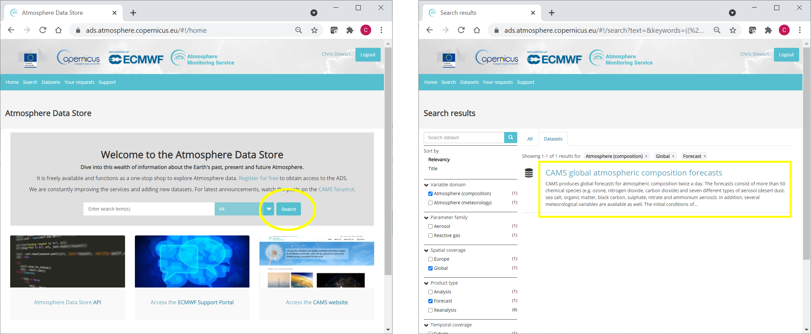

Tutorial on how to import, subset, aggregate and export CAMS Data
Contents

Tutorial on how to import, subset, aggregate and export CAMS Data¶
This tutorial provides practical examples that demonstrate how to download, read into Xarray, subset, aggregate and export data from the Atmosphere Data Store (ADS) of the Copernicus Atmosphere Monitoring Service (CAMS).
| Run the tutorial via free cloud platforms: |
|
 |
|
|---|
Install ADS API¶
We will need to install the Application Programming Interface (API) of the Atmosphere Data Store (ADS). This will allow us to programmatically download data.
Note
Note the exclamation mark in the line of code below. This means the code will run as a shell (as opposed to a notebook) command.
!pip install cdsapi
Requirement already satisfied: cdsapi in c:\users\cxcs\anaconda3\lib\site-packages (0.5.1)
Requirement already satisfied: requests>=2.5.0 in c:\users\cxcs\anaconda3\lib\site-packages (from cdsapi) (2.26.0)
Requirement already satisfied: tqdm in c:\users\cxcs\anaconda3\lib\site-packages (from cdsapi) (4.62.3)
Requirement already satisfied: urllib3<1.27,>=1.21.1 in c:\users\cxcs\anaconda3\lib\site-packages (from requests>=2.5.0->cdsapi) (1.26.7)
Requirement already satisfied: idna<4,>=2.5 in c:\users\cxcs\anaconda3\lib\site-packages (from requests>=2.5.0->cdsapi) (3.2)
Requirement already satisfied: charset-normalizer~=2.0.0 in c:\users\cxcs\anaconda3\lib\site-packages (from requests>=2.5.0->cdsapi) (2.0.4)
Requirement already satisfied: certifi>=2017.4.17 in c:\users\cxcs\anaconda3\lib\site-packages (from requests>=2.5.0->cdsapi) (2021.10.8)
Requirement already satisfied: colorama in c:\users\cxcs\anaconda3\lib\site-packages (from tqdm->cdsapi) (0.4.4)
Import libraries¶
Here we import a number of publicly available Python packages, needed for this tutorial.
# CDS API
import cdsapi
# Library to extract data
from zipfile import ZipFile
# Libraries to read and process arrays
import numpy as np
import xarray as xr
import pandas as pd
# Disable warnings for data download via API
import urllib3
urllib3.disable_warnings()
Access data¶
To access data from the ADS, you will need first to register (if you have not already done so), by visiting https://ads.atmosphere.copernicus.eu and selecting “Login/Register”
To obtain data programmatically from the ADS, you will need an API Key. This can be found in the page https://ads.atmosphere.copernicus.eu/api-how-to. Here your key will appear automatically in the black window, assuming you have already registered and logged into the ADS. Your API key is the entire string of characters that appears after key:
Now copy your API key into the code cell below, replacing ####### with your key.
URL = 'https://ads.atmosphere.copernicus.eu/api/v2'
# Replace the hashtags with your key:
KEY = '###################################'
Here we specify a data directory into which we will download our data and all output files that we will generate:
DATADIR = './'
The data we will download and inspect in this tutorial comes from the CAMS Global Atmospheric Composition Forecast dataset. This can be found in the Atmosphere Data Store (ADS) by scrolling through the datasets, or applying search filters as illustrated here:

Having selected the correct dataset, we now need to specify what product type, variables, temporal and geographic coverage we are interested in. These can all be selected in the “Download data” tab. In this tab a form appears in which we will select the following parameters to download:
Variables (Single level): Dust aerosol optical depth at 550nm, Organic matter aerosol optical depth at 550nm, Total aerosol optical depth at 550nm
Date: Start: 2021-08-01, End: 2021-08-08
Time: 00:00, 12:00 (default)
Leadtime hour: 0 (only analysis)
Type: Forecast (default)
Area: Restricted area: North: 90, East: 180, South: 0, West: -180
Format: Zipped netCDF (experimental)
At the end of the download form, select “Show API request”. This will reveal a block of code, which you can simply copy and paste into a cell of your Jupyter Notebook (see cell below)…
Note
Before running this code, ensure that you have accepted the terms and conditions. This is something you only need to do once for each CAMS dataset. You will find the option to do this by selecting the dataset in the ADS, then scrolling to the end of the Download data tab.
c = cdsapi.Client(url=URL, key=KEY)
c.retrieve(
'cams-global-atmospheric-composition-forecasts',
{
'variable': [
'dust_aerosol_optical_depth_550nm', 'organic_matter_aerosol_optical_depth_550nm', 'total_aerosol_optical_depth_550nm',
],
'date': '2021-08-01/2021-08-08',
'time': [
'00:00', '12:00',
],
'leadtime_hour': '0',
'type': 'forecast',
'area': [
90, -180, 0,
180,
],
'format': 'netcdf_zip',
},
f'{DATADIR}/2021-08_AOD.zip')
2022-08-26 22:23:05,994 INFO Welcome to the CDS
2022-08-26 22:23:06,006 INFO Sending request to https://ads.atmosphere.copernicus.eu/api/v2/resources/cams-global-atmospheric-composition-forecasts
2022-08-26 22:23:06,186 INFO Request is completed
2022-08-26 22:23:06,188 INFO Downloading https://download-0002-ads-clone.copernicus-climate.eu/cache-compute-0002/cache/data8/adaptor.mars_constrained.external-1655837791.0602834-32208-7-e1901198-26af-495f-8488-ea372c3d8d2e.zip to ./DATA/2021-08_AOD.zip (18.6M)
2022-08-26 22:23:08,848 INFO Download rate 7M/s
Result(content_length=19532728,content_type=application/zip,location=https://download-0002-ads-clone.copernicus-climate.eu/cache-compute-0002/cache/data8/adaptor.mars_constrained.external-1655837791.0602834-32208-7-e1901198-26af-495f-8488-ea372c3d8d2e.zip)
Read data¶
Now that we have downloaded the data, we can read, plot and analyse it…
We have requested the data in NetCDF format. This is a commonly used format for gridded (array-based) scientific data.
To read and process this data we will make use of the Xarray library. Xarray is an open source project and Python package that makes working with labelled multi-dimensional arrays simple and efficient. We will read the data from our NetCDF file into an Xarray “dataset”.
First we extract the downloaded zip file:
# Create a ZipFile Object and load zip file in it
with ZipFile(f'{DATADIR}/2021-08_AOD.zip', 'r') as zipObj:
# Extract all the contents of zip file into a directory
zipObj.extractall(path=f'{DATADIR}/2021-08_AOD/')
For convenience, we create a variable with the name of our downloaded file:
fn = f'{DATADIR}/2021-08_AOD/data.nc'
Now we can read the data into an Xarray dataset:
# Create Xarray Dataset
ds = xr.open_dataset(fn)
Let’s see how this looks by querying our newly created Xarray dataset …
ds
<xarray.Dataset>
Dimensions: (longitude: 900, latitude: 226, time: 16)
Coordinates:
* longitude (longitude) float32 -180.0 -179.6 -179.2 ... 178.8 179.2 179.6
* latitude (latitude) float32 90.0 89.6 89.2 88.8 ... 1.2 0.8 0.4 -2.033e-13
* time (time) datetime64[ns] 2021-08-01 ... 2021-08-08T12:00:00
Data variables:
omaod550 (time, latitude, longitude) float32 ...
aod550 (time, latitude, longitude) float32 ...
duaod550 (time, latitude, longitude) float32 ...
Attributes:
Conventions: CF-1.6
history: 2022-06-21 18:56:30 GMT by grib_to_netcdf-2.24.3: /opt/ecmw...We see that the dataset has three variables. Selecting the “show/hide attributes” icons reveals their names: “omaod550” is “Organic Matter Aerosol Optical Depth at 550nm”, “aod550” is “Total Aerosol Optical Depth at 550nm” and “duaod550” is “Dust Aerosol Optical Depth at 550nm”. The dataset also has three coordinates of longitude, latitude and time.
We will now look more carefully at the “Total Aerosol Optical Depth at 550nm” dataset.
While an Xarray dataset may contain multiple variables, an Xarray data array holds a single multi-dimensional variable and its coordinates. To make the processing of the aod550 data easier, we convert in into an Xarray data array.
# Create Xarray Data Array
da = ds['aod550']
da
<xarray.DataArray 'aod550' (time: 16, latitude: 226, longitude: 900)>
[3254400 values with dtype=float32]
Coordinates:
* longitude (longitude) float32 -180.0 -179.6 -179.2 ... 178.8 179.2 179.6
* latitude (latitude) float32 90.0 89.6 89.2 88.8 ... 1.2 0.8 0.4 -2.033e-13
* time (time) datetime64[ns] 2021-08-01 ... 2021-08-08T12:00:00
Attributes:
units: ~
long_name: Total Aerosol Optical Depth at 550nmSubset data¶
This section provides some selected examples of ways in which parts of a dataset can be extracted. More comprehensive documentation on how to index and select data is available here: https://docs.xarray.dev/en/stable/user-guide/indexing.html.
Temporal subset¶
By inspecting the array, we notice that the first of the three dimensions is time. If we wish to select only one time step, the easiest way to do this is to use positional indexing. The code below creates a Data Array of only the first time step.
time0 = da[0,:,:]
time0
<xarray.DataArray 'aod550' (latitude: 226, longitude: 900)>
[203400 values with dtype=float32]
Coordinates:
* longitude (longitude) float32 -180.0 -179.6 -179.2 ... 178.8 179.2 179.6
* latitude (latitude) float32 90.0 89.6 89.2 88.8 ... 1.2 0.8 0.4 -2.033e-13
time datetime64[ns] 2021-08-01
Attributes:
units: ~
long_name: Total Aerosol Optical Depth at 550nmAnd this creates a Data Array of the first 5 time steps:
time_5steps = da[0:5,:,:]
time_5steps
<xarray.DataArray 'aod550' (time: 5, latitude: 226, longitude: 900)>
[1017000 values with dtype=float32]
Coordinates:
* longitude (longitude) float32 -180.0 -179.6 -179.2 ... 178.8 179.2 179.6
* latitude (latitude) float32 90.0 89.6 89.2 88.8 ... 1.2 0.8 0.4 -2.033e-13
* time (time) datetime64[ns] 2021-08-01 ... 2021-08-03
Attributes:
units: ~
long_name: Total Aerosol Optical Depth at 550nmAnother way to select data is to use the .sel() method of xarray. The example below selects all data from the first of August.
firstAug = da.sel(time='2021-08-01')
We can also select a time range using label based indexing, with the loc attribute:
period = da.loc["2021-08-01":"2021-08-03"]
period
<xarray.DataArray 'aod550' (time: 6, latitude: 226, longitude: 900)>
[1220400 values with dtype=float32]
Coordinates:
* longitude (longitude) float32 -180.0 -179.6 -179.2 ... 178.8 179.2 179.6
* latitude (latitude) float32 90.0 89.6 89.2 88.8 ... 1.2 0.8 0.4 -2.033e-13
* time (time) datetime64[ns] 2021-08-01 ... 2021-08-03T12:00:00
Attributes:
units: ~
long_name: Total Aerosol Optical Depth at 550nmGeographic subset¶
Geographical subsetting works in much the same way as temporal subsetting, with the difference that instead of one dimension we now have two (or even three if we inlcude altitude).
Select nearest grid cell¶
In some cases, we may want to find the geographic grid cell that is situated nearest to a particular location of interest, such as a city. In this case we can use .sel(), and make use of the method keyword argument, which enables nearest neighbor (inexact) lookups. In the example below, we look for the geographic grid cell nearest to Paris.
paris_lat = 48.9
paris_lon = 2.4
paris = da.sel(latitude=paris_lat, longitude=paris_lon, method='nearest')
paris
<xarray.DataArray 'aod550' (time: 16)>
array([0.171206, 0.264414, 0.174514, 0.311893, 0.370464, 0.51193 , 0.215183,
0.155445, 0.1858 , 0.261495, 0.210902, 0.404128, 0.201173, 0.322401,
0.142407, 0.298272], dtype=float32)
Coordinates:
longitude float32 2.4
latitude float32 48.8
* time (time) datetime64[ns] 2021-08-01 ... 2021-08-08T12:00:00
Attributes:
units: ~
long_name: Total Aerosol Optical Depth at 550nmRegional subset¶
Often we may wish to select a regional subset. Note that you can specify a region of interest in the ADS prior to downloading data. This is more efficient as it reduces the data volume. However, there may be cases when you wish to select a regional subset after download. One way to do this is with the .where() function.
In the previous examples, we have used methods that return a subset of the original data. By default .where() maintains the original size of the data, with selected elements masked (which become “not a number”, or nan). Use of the option drop=True clips coordinate elements that are fully masked.
The example below uses .where() to select a geographic subset from 30 to 60 degrees latitude. We could also specify longitudinal boundaries, by simply adding further conditions.
mid_lat = da.where((da.latitude > 30.) & (da.latitude < 60.), drop=True)
Aggregate data¶
Another common task is to aggregate data. This may include reducing hourly data to daily means, minimum, maximum, or other statistical properties. We may wish to apply over one or more dimensions, such as averaging over all latitudes and longitudes to obtain one global value.
Temporal aggregation¶
To aggregate over one or more dimensions, we can apply one of a number of methods to the original dataset, such as .mean(), .min(), .max(), .median() and others (see https://docs.xarray.dev/en/stable/api.html#id6 for the full list).
The example below takes the mean of all time steps. The keep_attrs parameter is optional. If set to True it will keep the original attributes of the Data Array (i.e. description of variable, units, etc). If set to false, the attributes will be stripped.
time_mean = da.mean(dim="time", keep_attrs=True)
time_mean
<xarray.DataArray 'aod550' (latitude: 226, longitude: 900)>
array([[0.5073694 , 0.5073694 , 0.5073694 , ..., 0.5073694 , 0.5073694 ,
0.5073694 ],
[0.46712613, 0.46684644, 0.46654236, ..., 0.46802613, 0.46777073,
0.46744236],
[0.4360285 , 0.43542045, 0.4348367 , ..., 0.43786493, 0.43722036,
0.43663666],
...,
[0.0707379 , 0.06998384, 0.0699473 , ..., 0.07223374, 0.0704703 ,
0.07045814],
[0.07082298, 0.06885278, 0.06729606, ..., 0.07398504, 0.07276881,
0.07190534],
[0.06977707, 0.06662714, 0.06412187, ..., 0.07569987, 0.07466611,
0.07248908]], dtype=float32)
Coordinates:
* longitude (longitude) float32 -180.0 -179.6 -179.2 ... 178.8 179.2 179.6
* latitude (latitude) float32 90.0 89.6 89.2 88.8 ... 1.2 0.8 0.4 -2.033e-13
Attributes:
units: ~
long_name: Total Aerosol Optical Depth at 550nmInstead of reducing an entire dimension to one value, we may wish to reduce the frequency within a dimension. For example, we can reduce hourly data to daily max values. One way to do this is using groupby() combined with the .max() aggregate function, as shown below:
daily_max = da.groupby('time.day').mean(keep_attrs=True)
daily_max
<xarray.DataArray 'aod550' (day: 8, latitude: 226, longitude: 900)>
array([[[0.18434072, 0.18434072, 0.18434072, ..., 0.18434072,
0.18434072, 0.18434072],
[0.16585493, 0.16546583, 0.16507673, ..., 0.16711974,
0.16673064, 0.1663413 ],
[0.18521643, 0.18434095, 0.18346524, ..., 0.18784356,
0.18696761, 0.18609214],
...,
[0.09667897, 0.08909011, 0.08587909, ..., 0.09123039,
0.09405184, 0.09823561],
[0.1110785 , 0.10212731, 0.08977103, ..., 0.10339212,
0.10815954, 0.11166215],
[0.10825682, 0.10329485, 0.09268975, ..., 0.11059213,
0.11497021, 0.1126349 ]],
[[1.4042144 , 1.4042144 , 1.4042144 , ..., 1.4042144 ,
1.4042144 , 1.4042144 ],
[1.4563639 , 1.4558775 , 1.4554883 , ..., 1.4574342 ,
1.457045 , 1.4566559 ],
[1.3943876 , 1.3937066 , 1.3929282 , ..., 1.39682 ,
1.3959444 , 1.3952634 ],
...
[0.08276582, 0.08305788, 0.08257127, ..., 0.06924176,
0.07439852, 0.0783875 ],
[0.08364129, 0.08344698, 0.08257127, ..., 0.07118797,
0.07507968, 0.07936049],
[0.08354425, 0.08189011, 0.08072281, ..., 0.07245278,
0.07653904, 0.08004165]],
[[0.08928442, 0.08928442, 0.08928442, ..., 0.08928442,
0.08928442, 0.08928442],
[0.08743596, 0.08753324, 0.08743596, ..., 0.08763051,
0.08763051, 0.08753324],
[0.08947921, 0.08938193, 0.08938193, ..., 0.08957624,
0.08957648, 0.08947921],
...,
[0.05853963, 0.06418276, 0.06758785, ..., 0.06019354,
0.05737209, 0.05688548],
[0.05416131, 0.05630183, 0.05678844, ..., 0.05746937,
0.0555234 , 0.05445313],
[0.05279922, 0.05036688, 0.04754543, ..., 0.06175017,
0.05999899, 0.05688572]]], dtype=float32)
Coordinates:
* longitude (longitude) float32 -180.0 -179.6 -179.2 ... 178.8 179.2 179.6
* latitude (latitude) float32 90.0 89.6 89.2 88.8 ... 1.2 0.8 0.4 -2.033e-13
* day (day) int64 1 2 3 4 5 6 7 8
Attributes:
units: ~
long_name: Total Aerosol Optical Depth at 550nmSpatial aggregation¶
We can apply the same principles to spatial aggregation. An important consideration when aggregating over latitude is the variation in area that the gridded data represents. To account for this, we would need to calculate the area of each grid cell. A simpler solution however, is to use the cosine of the latitude as a proxy.
The example below demonstrates how to calculate a spatial average of total AOD, applied to the temporal mean we previously calculated, to obtain a single mean value of total AOD averaged in space and time.
We first calculate the cosine of the latitudes, having converted these from degrees to radians. We then apply these to the Data Array as weights.
weights = np.cos(np.deg2rad(time_mean.latitude))
weights.name = "weights"
time_mean_weighted = time_mean.weighted(weights)
Now we apply the aggregate function .mean() to obtain a weighted average.
Total_AOD = time_mean_weighted.mean(["longitude", "latitude"])
Total_AOD
<xarray.DataArray 'aod550' ()> array(0.29400483)
Export data¶
This section includes a few examples of how to export data.
Export data as NetCDF¶
The code below provides a simple example of how to export data to NetCDF.
paris.to_netcdf(f'{DATADIR}/2021-08_AOD_Paris.nc')
Export data as CSV¶
You may wish to export this data into a format which enables processing with other tools. A commonly used file format is CSV, or “Comma Separated Values”, which can be used in software such as Microsoft Excel. This section explains how to export data from an xarray object into CSV. Xarray does not have a function to export directly into CSV, so instead we use the Pandas library. We will read the data into a Pandas Data Frame, then write to a CSV file using a dedicated Pandas function.
df = paris.to_dataframe()
df
| longitude | latitude | aod550 | |
|---|---|---|---|
| time | |||
| 2021-08-01 00:00:00 | 2.4 | 48.799999 | 0.171206 |
| 2021-08-01 12:00:00 | 2.4 | 48.799999 | 0.264414 |
| 2021-08-02 00:00:00 | 2.4 | 48.799999 | 0.174514 |
| 2021-08-02 12:00:00 | 2.4 | 48.799999 | 0.311893 |
| 2021-08-03 00:00:00 | 2.4 | 48.799999 | 0.370464 |
| 2021-08-03 12:00:00 | 2.4 | 48.799999 | 0.511930 |
| 2021-08-04 00:00:00 | 2.4 | 48.799999 | 0.215183 |
| 2021-08-04 12:00:00 | 2.4 | 48.799999 | 0.155445 |
| 2021-08-05 00:00:00 | 2.4 | 48.799999 | 0.185800 |
| 2021-08-05 12:00:00 | 2.4 | 48.799999 | 0.261495 |
| 2021-08-06 00:00:00 | 2.4 | 48.799999 | 0.210902 |
| 2021-08-06 12:00:00 | 2.4 | 48.799999 | 0.404128 |
| 2021-08-07 00:00:00 | 2.4 | 48.799999 | 0.201173 |
| 2021-08-07 12:00:00 | 2.4 | 48.799999 | 0.322401 |
| 2021-08-08 00:00:00 | 2.4 | 48.799999 | 0.142407 |
| 2021-08-08 12:00:00 | 2.4 | 48.799999 | 0.298272 |
df.to_csv(f'{DATADIR}/2021-08_AOD_Paris.csv')